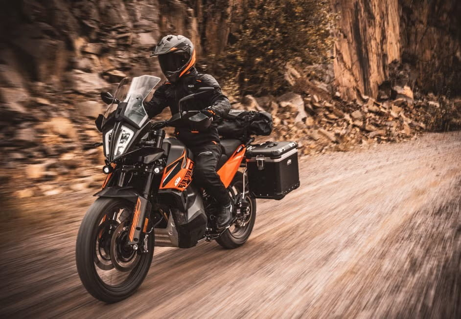

Svet Adventure motora
Adventure motocikli su dizajnirani za vozače koji ne prave kompromis između performansi na asfaltu i sposobnosti na terenu. Namenjeni su dugim putovanjima, ali i istraživanju nepoznatih i zahtevnih ruta van puta.
Ove mašine predstavljaju savršen spoj touring udobnosti i off-road izdržljivosti, što ih čini idealnim izborom za avanture na različitim vrstama podloga. Bilo da se vozite autoputem ili kroz planinske staze, pružaju stabilnost i sigurnost u svim uslovima.
Uz naprednu elektroniku, udobnu ergonomiju i snažne, izdržljive agregate, adventure motocikli su spremni da osvoje svaki horizont i pretvore svaku vožnju u pravo putničko iskustvo.
